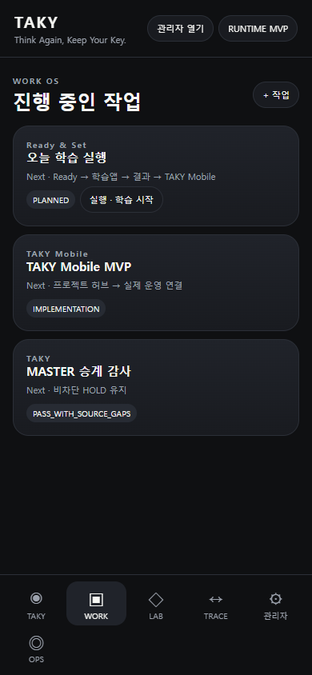
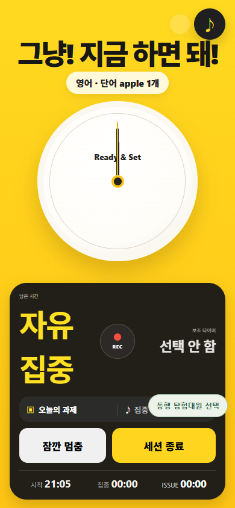
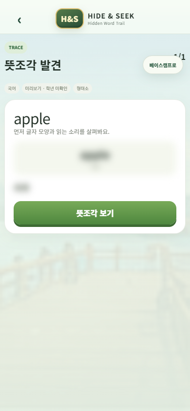
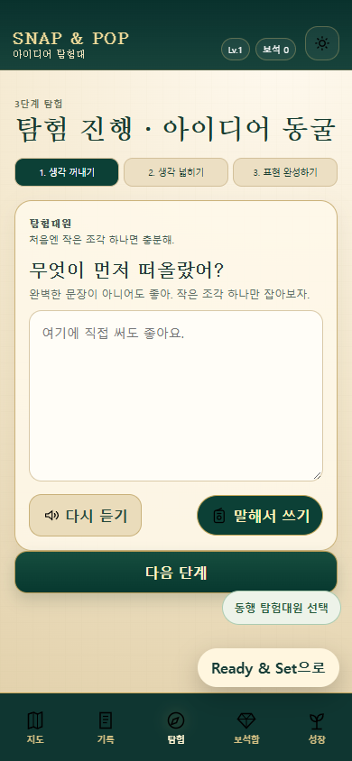
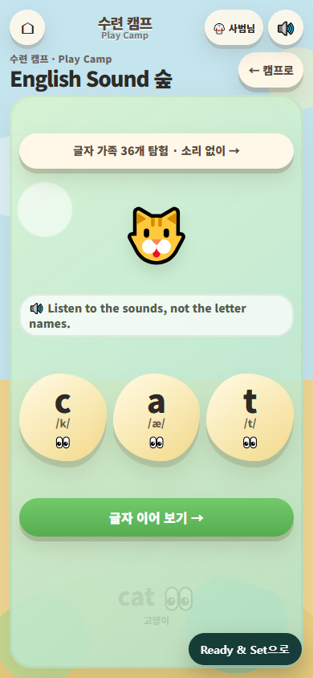
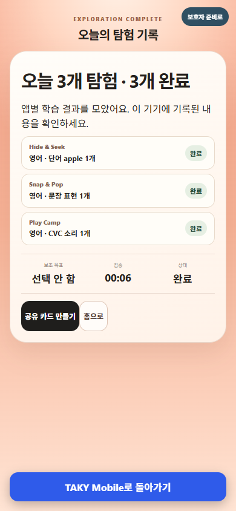
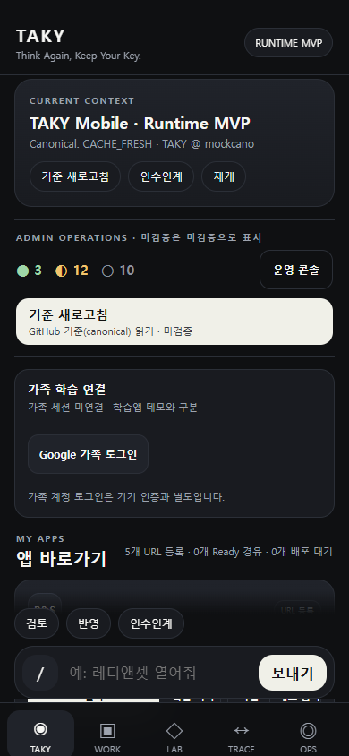
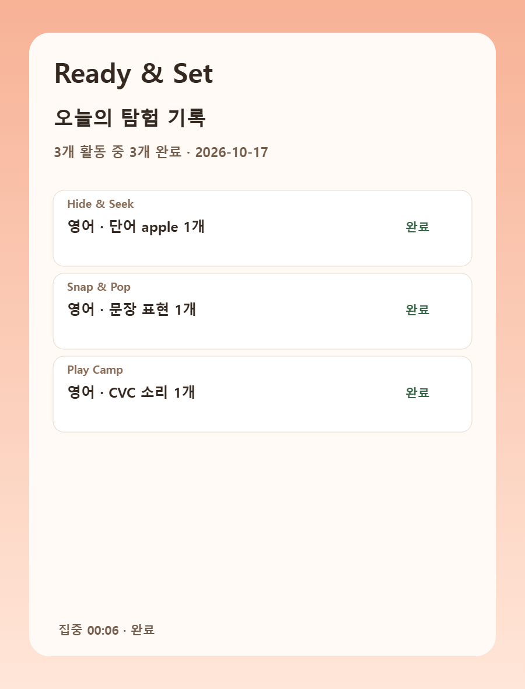
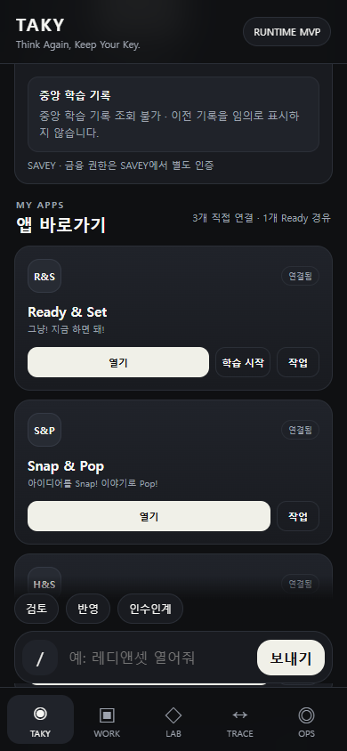
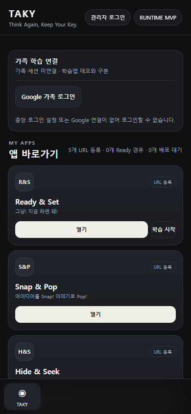

TAKY Mobile에서 시작한 한 학습 세션이 Ready & Set, Hide & Seek, Snap & Pop, Play Camp를 거쳐 다시 Ready와 TAKY Mobile로 돌아옵니다. 실제 코드와 브라우저를 거쳤지만, 화면 데이터는 가상 가족·가상 과제입니다.
한 세션에서 실행할 학습 과제 구성

Planner의 세 과제를 동일 세션으로 연결

TRACE 학습 후 원래 Planner 과제로 복귀

문장 생각과 표현 후 동일 세션으로 복귀

음소 조합 활동을 완료하고 Ready로 복귀

세 과제 결과 합산, Mobile 복귀 버튼

완료 응답 수신과 세션 처리 결과 확인

세 앱 결과가 담긴 PNG 이미지, 다운로드 확인

허용된 구성원만 조회하며, SAVEY 금융 권한은 별도로 확인

중앙 API·Google 출처 설정이 없으면 로그인 차단, 개인정보 미표시

검증 경계: 실가족 인증·원격 서버 영속 저장·최종 Golden 시안 일치·실제 태블릿 사용성·배포 검증은 포함하지 않았습니다. 유료 API나 외부 배포는 실행하지 않았습니다.